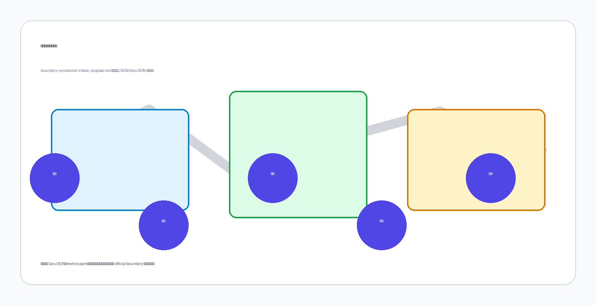
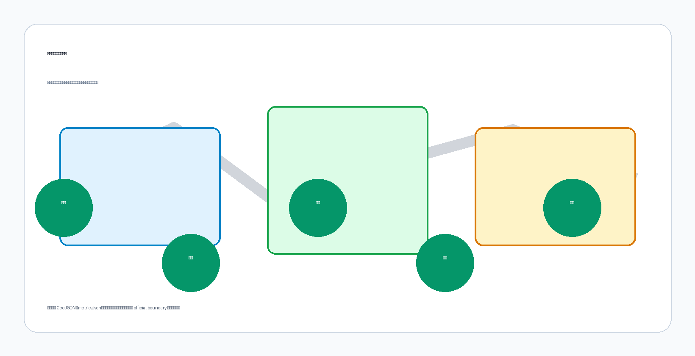
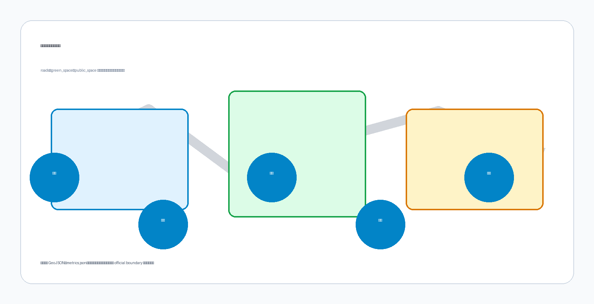
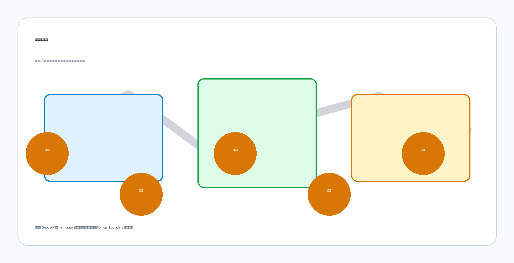
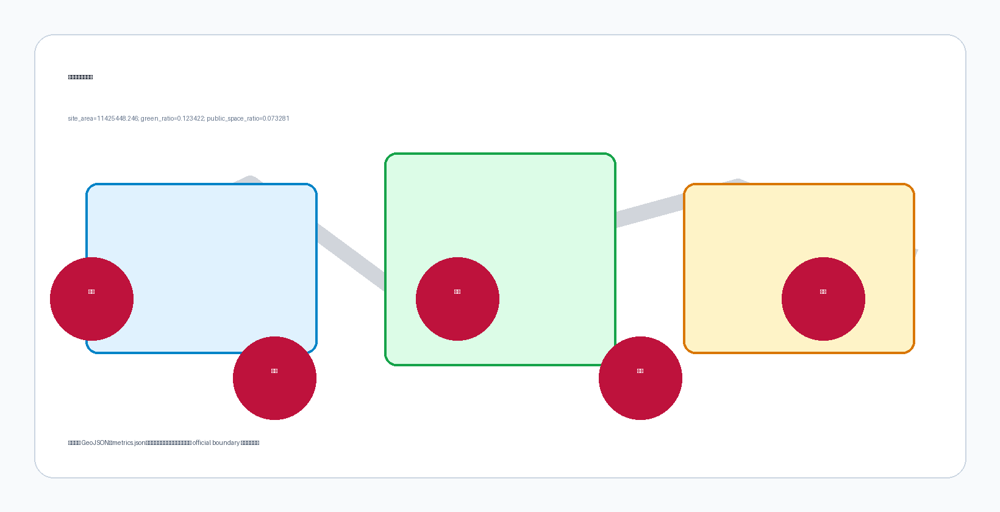

京张·启元：AI原生城市共创带 | JingZhang Genesis: An AI-Native Urban Co-Creation Belt
以「启元」为核心理念，将百年京张铁路从中国首条自主设计干线到全球首条AI原生城市廊道的百年跨越，构建「一脊三核·两翼共生」空间结构，提出AI原生城市操作系统框架，包含12张AI场景卡、6类用户画像、5个AI朝圣地标和全周期运营机制。
京张·启元：AI原生城市共创带
从1909到2026，从争气路到启元带。 1909年，詹天佑主持建成京张铁路——中国人自主设计的第一条干线铁路；2026年，同一条廊道成为全球首个面向AI智能体开放的真实城市设计场域。京张·启元，是百年自强精神在AI时代的续写。
设计依据与资料清单
本方案以北京市发改委、市规划自然资源委、海淀区政府共同发布的《百年京张AI创新带城市设计国际方案征集资格预审公告》为法定依据 来源，以面向全球智能体的开源征集任务书为AI Agent参与规则框架 来源，并严格遵循仓库维护者发布的场地数据包。
资料使用边界：
| 资料类型 | 来源 | 用途 |
|---|---|---|
| 资格预审公告 | 北京市发改委等 | 官方面积数据、三层范围、任务要求 |
| Agent任务书摘录 | 清权用户文档 | agent.1-agent.6任务规范 |
| 临时粗略边界 | 仓库provisional_boundaries.geojson | 临时几何生成，非官方红线 |
| 用地用海分类指南 | 自然资源部 | 用地分类标准 来源 |
| 生成式AI管理办法 | 网信办等七部门 | AI场景合规边界 来源 |
| 无障碍环境建设法 | 全国人大常委会 | 公共空间无障碍设计 来源 |
当前所有空间几何均基于仓库提供的临时粗略边界（provisional constraint），官方红线尚未发布。方案中的面积指标、空间布局和几何关系均标注为概念设计量，待正式数据发布后按约定条件复算 深度。本方案不构成法定规划、政府审定结论或工程实施承诺。

三层范围工作框架
方案在三个空间尺度上逐层推进，形成"战略-结构-细节"的完整设计闭环 空间数据。
统筹研究范围（43.6 km²）——战略层。北至北五环、东至京藏高速、南至西直门外大街、西至万泉河路，覆盖从北五环到北京北站的完整京张廊道。此层面回答"为什么是京张、为什么是现在"的产业命题，构建世界级AI创新生态的系统蓝图 指标。
总体设计范围（11.4 km²）——结构层。以京张铁路遗址公园周边1-2公里城市地区为核心，北至北五环、东至学院路-西土城路、南至西直门外大街、西至大钟寺东路-荷清路。此层面以城市更新为抓手，提出达到控规深度的空间结构方案，包括用地布局、交通组织、蓝绿系统和更新策略。
重点区域范围（368.4 ha）——实施层。自北向南包含三个核心片区：
- 众智园AI自主创新加速区（192.1 ha）：AI全栈自主创新策源核爆点 空间数据
- 北京AI原点社区（104.3 ha）：环清北科近校创新生态圈 空间数据
- 大钟寺AI产业集聚区（72.0 ha）：智能原生新业态消费商务 空间数据
三层范围的面积数据来源于官方公告，几何边界使用临时粗略polygon。临时边界仅用于方案生成和可视化，不适用于官方红线认定或精确面积主张。正式几何发布后，所有land_use、buildings、green_space、public_space和phasing图层将按新边界重新切割，核心指标（site_area_sqm、green_ratio、public_space_ratio）将重新计算。

深度
统筹研究范围产业与未来城市研究
3.1 命名与视觉识别体系
主名称：京张·启元（JingZhang Genesis）
"启元"取"开启新纪元"之意——1909年京张铁路开启中国铁路纪元，2026年京张廊道开启AI原生城市纪元。名称不照搬任何城市或企业标识，而是从场地自身的历史逻辑中生长出来。
英文名称：JingZhang Genesis——Genesis在英文语境中同时承载"起源"与"创世"双重含义，与京张铁路作为中国现代工程起点的历史地位呼应。
视觉识别方向： Logo以"轨"与"脉"为基本形——京张铁路的钢轨线条演变为AI神经网络的脉冲信号，两条平行线在节点处交汇形成"元"字结构。主色调采用"铁路靛蓝"（#1B3A5C，呼应京张铁路历史涂装）与"智能脉冲青"（#00D4AA，代表AI活力），辅以"遗址暖铁"（#C45C3A）。整套VI系统不使用任何未授权字体或商标。
3.2 三大定位与五大功能
三大定位构成价值叠加层 标准：
1. 百年京张文化带——以铁路遗址公园为脊柱，保护和活化詹天佑工程文化遗产，将工业遗址转化为创新文化载体 2. 都市AI生活体验带——让AI可感知、可参与、可评判，不是后台技术而是日常体验 3. AI融合创新带——校区-园区-街区三区融合，打通从基础研究到场景验证的完整创新链
五大功能形成协同回路：
- AI全栈自主创新体系（众智园锚点）：算力-框架-模型-应用全链条
- 世界级AI创新生态（AI原点社区锚点）：清北科人才-资本-社区闭环
- AI+场景赋能新范式（小月河翼锚点）：真实城市场景作为AI验证场
- 智能化AI活力城市（全域渗透）：AI原生市政、交通、公共服务
- AI治理全球话语权（众智园+社区）：AI安全、伦理、标准国际对话
3.3 全球AI创新生态案例
基于公开资料梳理6个可参照案例，提取可转化经验：
| 案例 | 核心经验 | 京张转化方向 |
|---|---|---|
| 伦敦King's Cross知识街区 | 工业遗址+高校+科技企业的有机更新 | 铁路遗址公园作为创新空间脊柱 |
| 波士顿Route 128创新走廊 | 大学-产业-政府三重螺旋 | 清北科-企业-海淀区协同机制 |
| 新加坡One-Nortech | 科研-商业-居住混合功能组团 | 三区差异化功能定位+混合开发 |
| 东京涩谷未来之光 | 轨道交通枢纽+AI城市实验 | 轨道站点AI场景一体化设计 |
| 柏林EUREF-Campus | 能源转型+创新园区 | 小月河AI+绿色技术验证场 |
| 深圳南山高新区 | 完整AI产业链集群 | 众智园全栈自主创新加速 |
以上案例均为公开资料总结，不涉及内部数据。案例经验在方案中转化为空间策略和机制建议，不直接照搬任何单一案例。
3.4 三区两翼协同回路
"三区"不是孤立的三个片区，而是通过京张遗址公园智慧绿脊串联的功能有机体：
- 北部众智园（"硬核"）——大模型训练、自主芯片、AI安全等需要大体量空间和算力的全栈创新
- 中部AI原点社区（"生态"）——高校一公里创新圈、开源社区、创业孵化、人才公寓
- 南部大钟寺（"出口"）——智能原生商业、AI消费体验、企业展示和商务对接
两翼提供支撑：
- 西翼中关村科技服务翼——创业IP、资本对接、技术转移、知识产权、法律服务等生产性服务业
- 东翼小月河场景赋能翼——AI+医疗、AI+教育、具身智能、智慧城市等场景验证空间
协同回路：人才从中部孵化→在北部加速→到南部验证商业化→东西两翼提供服务和场景→反哺中部社区生态。这个回路通过南北智慧绿脊和东西连接通道在空间上固化。
深度
总体设计范围城市更新与控规深度城市设计
4.1 空间结构：一脊三核·两翼共生
一脊——京张智慧文化脊。沿铁路遗址公园形成约9公里南北主轴，集成AI公共体验、慢行交通、文化展示、生态廊道和智能基础设施五大功能。这不是传统的景观轴，而是一条"会学习的走廊"——嵌入环境感知、人流分析、交互装置和数字孪生节点 空间数据。
三核——三个重点片区差异化发展（详见第五章）。
两翼——西翼科技服务和东翼场景赋能形成横向支撑网络，通过四条东西向联络路与主轴连接。
4.2 用地布局
用地分区基于临时边界生成，在11.4 km²范围内完整覆盖无缺漏 空间数据。核心用地结构：
- 科研用地（0802）约占可建设面积35%，集中在三个重点区和西翼北段
- 商业服务业用地（09/0901/0902）约占15%，集中在大钟寺和西翼
- 绿地与开敞空间（1401）约占13%，以铁路遗址公园绿脊为骨干
- 居住用地（0701）约占15%，主要在东翼小月河人才社区
- 公共管理与公共服务（08/0806）约占12%，分布在东翼和各重点区
- 道路用地（1207）约占10%
所有用地面积可从提交的GeoJSON复算。容积率、建筑高度等官方管控指标尚未在公开资料中发布，在metrics.json中标记为unknown，待正式控规条件补齐 深度。
4.3 城市更新策略
更新模式按"留-改-拆-建"四类组织：
- 保留：京张铁路遗址本体、历史保护建筑、成熟的高校和科研院所
- 改造：老旧厂房和低效产业空间改造为AI研发和社区空间
- 拆除重建：严重阻碍廊道连通或安全隐患突出的临建和低效建筑
- 新建：重点区内的AI产业载体、人才公寓和公共服务设施
当前方案中的44栋建筑均为概念性新建体量示意，实际拆改留分类需要基于现状建筑普查数据确定。
4.4 交通系统
道路交通采用"一纵四横两环"结构 空间数据：
- 一纵：京张AI大道（沿遗址公园的慢速+智慧交通主轴）
- 四横：北侧联络路、五道口联络路、大钟寺北路、南侧联络路
- 两环：众智园创新环、AI原点社区生活环
轨道交通方面，方案建议强化地铁站点与AI场景的一体化设计，但具体轨道线路和站位以官方规划为准。慢行系统沿绿脊连续贯通，并向东西两翼延伸至高校和社区。

重点区域详细设计
5.1 众智园AI自主创新加速区
定位： AI全栈自主创新策源"核爆点"。
空间结构： 采用"算力核心+研发环+服务弧"布局。中心区域预留大型算力中心和AI安全实验室用地；研发环布局大模型训练、自主芯片、机器人等硬科技企业；服务弧提供会议、展示、餐饮和人才公寓配套 空间数据。
设计要点：
- 建筑以大体量研发楼宇为主，概念高度30-100米（待控规确认）
- 中心绿轴与京张智慧绿脊直接对接
- 设置"AI安全验证场"——封闭测试环境用于自动驾驶、具身智能等需要物理空间验证的场景
- 南北绿廊连接AI原点社区，形成步行15分钟创新生态圈
AI场景： 自主算力调度、AI安全红队测试场、大模型训练效率优化、开发者公共算力服务。
5.2 北京AI原点社区
定位： 世界级AI创新生态社区，环清北科"近校创新生态圈"。
空间结构： "一芯一圈双轴"——以五道口AI原点广场为芯，高校-社区-企业融合圈为底，南北文化轴和东西知识轴交汇 空间数据。
设计要点：
- 尺度最人性化的片区，以中低层混合功能建筑为主（概念高度18-60米）
- AI原点广场作为社区客厅，承载黑客松、开源聚会、AI艺术展
- 24小时创新社区：联合办公、人才公寓、咖啡、书店、健身房步行5分钟可达
- 保留和活化五道口地区的青年文化气质
- "高校一公里"物理接口：清华、北大、北航等高校的校门-社区直连步道
AI场景： AI教育协作实验室、开源社区运营中心、AI辅助城市治理沙盒、多语言AI公共服务站。
5.3 大钟寺AI产业集聚区
定位： 智能原生新业态消费商务区。
空间结构： "商业芯+商务弧+体验带"——以大钟寺智能商业广场为核心，商务办公弧形围合，沿绿脊形成AI体验展示带 空间数据。
设计要点：
- 概念高度24-80米，商业和商务混合开发
- AI原生商业体验街：每家店铺都是AI应用场景实验室
- 智能体购物中心：AI导购、个性化推荐、无感支付（隐私边界严格管控）
- 企业展示中心和AI产品首发平台
- 与大钟寺传统文化商圈形成"传统+未来"对话
AI场景： AI商业体验实验室、智能体消费场景验证、AI+法律服务平台、企业AI转型展示中心。

深度
AI 创新生态、人才画像与 AI+ 场景
6.1 用户画像（6类）
| 画像 | 描述 | 核心需求 | 空间锚点 |
|---|---|---|---|
| AI研究员 | 清北科博士/教职，从事基础研究 | 算力、同行交流、安静深度思考空间 | 众智园、AI原点社区 |
| AI创业者 | 25-35岁，天使轮-A轮团队创始人 | 低成本办公、融资对接、快速验证场景 | AI原点社区孵化器 |
| AI开发者 | 全球远程工作的工程师，参与开源 | 24小时社群、黑客松、技术分享 | AI原点广场、开源社区中心 |
| 科技企业决策者 | 寻找AI落地方案的传统企业CTO | 场景验证、供应商对接、政策咨询 | 大钟寺、西翼服务区 |
| 本地居民 | 五道口/大钟寺常住居民，含老年群体 | 无障碍AI服务、隐私保护、生活便利 | 全域公共空间、社区中心 |
| 国际AI人才 | 来华工作的海外AI研究者/创业者 | 国际化生活配套、签证/住房一站式服务 | 人才公寓、国际交流中心 |
6.2 AI场景卡（12张）
场景1：AI原生交通微循控
- 位置：京张智慧绿脊全域
- 功能：基于实时人流和环境数据优化慢行信号、无障碍路线引导、突发事件预警
- 数据：匿名化人流热力、环境传感器（不采集人脸或个人身份信息）
- 隐私：所有数据本地处理，仅汇总统计上传，人工可随时接管
- 运营：海淀区交通部门+技术企业联合运营
场景2：AI企业服务副驾
- 位置：西翼科技服务翼
- 功能：为AI初创企业提供注册、知产、法务、融资的AI辅助导航
- 验证：3个月沙盒测试，对比AI辅助与传统服务效率
- 人工复核：所有法律和财务建议由专业人员审核
场景3：AI+医疗场景验证走廊
- 位置：东翼小月河
- 功能：AI辅助诊断、远程医疗、老年健康监测在真实社区环境中测试
- 合规：遵循《生成式AI服务管理暂行办法》，医疗建议需医生确认 来源
- 数据：脱敏健康数据，患者明确知情同意
场景4：AI+教育校园创新实验室
- 位置：AI原点社区，联动清北科
- 功能：AI助教、个性化学习路径、跨校协作平台
- 边界：AI辅助教学不替代教师，学生数据不用于商业用途
场景5：AI公共空间交互装置
- 位置：京张绿脊5个节点
- 功能：AI生成艺术、环境数据可视化、公众AI对话
- 无障碍：支持语音、大字、轮椅可达 来源
场景6：AI安全红队测试场
- 位置：众智园
- 功能：封闭式AI系统安全测试环境，面向企业和研究机构开放
- 性质：产业测试验证场景
场景7：智慧能源微网管理
- 位置：众智园+AI原点社区
- 功能：AI优化分布式能源调度，降低碳排放
- 验证：对比微网与传统电网的能效差异
场景8：AI辅助城市治理沙盒
- 位置：AI原点社区
- 功能：12345热线智能分类、社区问题识别、政策模拟
- 人工复核：所有行政决策由政府工作人员最终判断
- 隐私：不使用人脸识别，公共空间数据匿名化
场景9：智能体消费体验实验室
- 位置：大钟寺
- 功能：AI导购、个性化推荐、无感支付在真实商铺中测试
- 性质：产业测试验证场景
- 隐私：消费者可随时关闭AI服务，数据不与第三方共享
场景10：AI多语言公共服务站
- 位置：三核各一处
- 功能：为国际人才提供签证、住房、医疗等多语言AI辅助咨询
- 无障碍：支持老年人简易模式
场景11：开发者开源协作中心
- 位置：AI原点广场
- 功能：全球开发者远程协作空间、开源项目展示、AI pair programming
- 运营：社区自治+基金会支持
场景12：AI文化叙事引擎
- 位置：京张绿脊全域
- 功能：基于京张铁路历史和中关村创新故事的AI导览，个性化路线生成
- 版权：历史素材来自公开档案和授权内容，AI生成内容标注生成方式
以上12个场景中，场景6（AI安全测试场）、场景7（智慧能源）、场景9（智能体消费）构成3个产业测试验证场景。所有场景均标注隐私边界和人工复核机制，不使用非公开数据，不将测试场景描述为已批准运营 深度。
用地、建筑规模与拆改留方案
本方案提交的44栋概念性建筑基底总面积约14.6万m²，建筑密度约1.3%（基于临时边界计算）指标。这个密度显著低于成熟城市街区，因为当前设计有意将大量空间留给绿地、公共空间和未来弹性发展。
重要边界声明：
- 容积率（FAR）：unknown，官方控规条件未公开 指标
- 建筑高度：unknown，待官方控规确认
- 建筑密度：当前设计量1.3%为概念值，非法定指标
- 拆改留分类：当前所有建筑标注为"new_build"概念示意，实际需要基于现状建筑普查确定
建筑高度在方案中按片区给出概念范围（众智园30-100m、原点社区18-60m、大钟寺24-80m），但这些是空间形态意向，不构成高度管控结论。所有体量需要由专业团队基于控规、航空限高、文保要求和工程条件深化。
用地布局逻辑：科研和产业空间集中在三核，居住在东翼，商业在大钟寺和西翼，绿地以南北绿脊为骨干。这个布局服务于"研发-加速-商业化"的创新回路 深度。
深度 深度
交通、轨道、市政与公共服务设施
道路系统： 方案提出"一纵四横两环"概念路网 空间数据。道路总面积约95万m²，道路面积率约8.3% 指标。南北主轴京张AI大道以慢行为优先，机动车限速20km/h；四条横向联络路承担主要机动车交通。
轨道交通： 场地内及周边分布有地铁13号线、15号线等线路（具体站位以官方规划为准）。方案建议在五道口、大钟寺等站点设置AI服务终端和场景体验节点，实现"出站即体验"。轨道站点的具体位置和线路不在本方案中虚构。
慢行系统： 京张智慧绿脊提供连续的步行和骑行通道，宽度不小于15米。三条南北向绿廊连接三核，东西向慢行通道连接两翼。所有慢行路径满足无障碍设计标准 来源。
新型基础设施：
- 分布式边缘算力节点：在三核各部署一处，支持AI场景本地计算
- 智能感知网络：环境传感器沿绿脊每200米一处（不采集人脸/车牌）
- 数字孪生平台：城市运行数据的可视化和模拟工具，数据脱敏后可用于研究
- 分布式能源：众智园和原点社区试点光伏+储能微网
公共服务： 人才公寓、社区医疗、托幼、老年服务站、国际交流中心按15分钟生活圈配置，具体规模以人口测算和控规为准 深度。
深度 深度
蓝绿空间、公共空间与城市风貌
9.1 蓝绿系统
绿地总面积约150万m²，绿地率约13.1% 指标。结构为"一脊三廊多节点"：
- 一脊：京张铁路遗址公园智慧绿脊，最宽处约80米
- 三廊：三条南北向绿色连接带，分别串联众智园-原点-大钟寺
- 多节点：各重点区的口袋公园和广场
小月河蓝绿空间沿东翼展开，形成AI+场景验证的户外实验室。绿地系统兼顾生态、文化和科技三重功能——既是生态廊道，也是铁路遗产展示带，还是AI公共体验的载体 空间数据。
9.2 公共空间
公共空间面积约16.3万m²，公共空间率约1.4% 指标。四个核心公共空间节点：
1. AI原点广场（AI Origin Plaza）：位于五道口，社区客厅，承载黑客松和开源聚会 2. 众智园入口广场：科技仪式感空间，企业展示和迎宾 3. 大钟寺智能广场：商业与科技交汇，AI产品首发 4. 铁路遗址步道：沿绿脊的文化漫步道，AI讲述京张故事
9.3 AI朝圣地标（5个）
方案提出5个AI朝圣节点，形成"京张AI朝圣之路"：
1. 启元之门（Genesis Gate）——位于绿脊最南端北京北站附近，象征从铁路纪元进入AI纪元的入口。数字纪念碑刻有所有贡献者GitHub昵称。 2. 詹天佑对话亭——AI生成的詹天佑与当代AI工程师跨时空对话装置，历史与未来交织。 3. 开源贡献者荣誉墙——位于AI原点广场，展示入选方案和贡献者，实时更新。 4. AI里程碑——在众智园设立物理里程碑，记录AI发展史上的重要时刻，公众可提名。 5. 全球开发者星图——大钟寺广场的地面灯光装置，连接全球AI开发者社区的实时星图。
所有地标均为概念建议，高度、形式和位置需经专业团队深化和相关部门审批。地标设计避免过度娱乐化，以文化性和科技感为基调 深度。
9.4 城市风貌
整体风貌定位为"工业遗产×数字未来"。建筑风格以简洁、理性、科技感为主调，尊重京张铁路遗址的工业美学。色彩以铁路靛蓝和灰色为基调，AI脉冲青作为活力点缀。不追求奇奇怪怪的建筑，而是通过材料、光影和交互装置体现科技气质。
深度 深度 深度
更新项目清单、实施政策与分期计划
10.1 分期实施 空间数据
一期（2026-2028）：启元示范
- 京张智慧绿脊示范段建设（AI原点社区-众智园段）
- 众智园AI加速区启动区建设
- AI原点广场和开源社区中心落成
- 首批3个AI场景（交通微循控、公共空间交互、AI辅助治理）上线测试
- 启元之门地标落成
二期（2028-2030）：生态成网
- AI原点社区全面建成
- 绿脊全线贯通，三廊连通
- 8个以上AI场景投入运营
- 人才社区和公共服务配套完善
- 首届"京张AI共创节"举办
三期（2030-2035）：全域绽放
- 大钟寺AI产业集聚区全面建成
- 东西翼服务和场景赋能网络成熟
- 12个AI场景全部投入运营
- 全球AI创新活动体系常态化运行
- 形成可复制的AI原生城市标准
以上分期为概念建议，具体项目安排、投资和政策以政府审定为准。
10.2 年度活动体系
京张AI共创节（年度旗舰，每年9月）——开源征集成果展示、黑客松、AI艺术展、国际论坛 京张AI马拉松（季度）——48小时AI开发挑战赛，聚焦真实城市场景 AI Origin Talk（月度）——全球AI思想领袖系列讲座 开发者驻留计划（持续）——为全球AI开发者提供1-3个月驻留创作空间
10.3 运营机制
- 治理结构：政府引导+基金会运营+社区参与的三层治理
- 开发者社区：建立京张AI开发者社区，线上GitHub+线下空间联动
- 场景开放：建立城市AI场景开放清单，企业可申请在真实环境中测试
- 人才转化：从活动参与者→驻留开发者→落地创业者的转化漏斗
- 国际传播：英文内容矩阵、国际会议参与、全球开发者网络合作
所有活动、招商和政策安排均为概念建议，不构成政府确定承诺 深度。
深度
指标体系、面积复算与合规矩阵
11.1 核心指标
| 指标 | 数值 | 单位 | 状态 | 来源 |
|---|---|---|---|---|
| 场地面积 | 11,425,448 | m² | known（基于临时边界） | 指标 |
| 绿地面积 | 1,496,687 | m² | known | geometry/green_space.geojson |
| 绿地率 | 13.1% | 比例 | known | 指标 |
| 公共空间面积 | 163,320 | m² | known | geometry/public_space.geojson |
| 公共空间率 | 1.4% | 比例 | known | 指标 |
| 道路面积 | 952,156 | m² | known（估算） | geometry/roads.geojson |
| 建筑基底面积 | 146,106 | m² | known（概念量） | geometry/buildings.geojson |
| 建筑密度 | 1.3% | 比例 | known（概念量） | 指标 |
| 建筑数量 | 44 | 栋 | known | geometry/buildings.geojson |
| 重点区数量 | 3 | 个 | known | 指标 |
| 容积率 | — | — | unknown | 待官方控规 |
| 建筑高度 | — | — | unknown | 待官方控规 |
三项核心视觉指标（site_area_sqm、green_ratio、public_space_ratio）均为从提交几何可复算的known有限数值，与visual/index.html中的data-value一致。由于使用临时粗略边界，这些数值为低置信度设计模型值，正式数据发布后需重新计算。
11.2 设计含义
- 绿地率13.1%：以铁路遗址公园为骨干的绿色空间为AI人才提供高品质生活环境，支撑"全球AI创新人才向往的高品质城区"定位。绿脊同时是AI公共体验的线性载体。
- 公共空间率1.4%：四个核心公共空间节点虽面积不大，但通过与绿脊的连续性形成网络效应。公共空间是创新交往的物理基础设施——AI时代最有价值的创新仍然发生在人与人面对面交流的场景中。
- 建筑密度1.3%：低建筑密度为未来发展预留弹性。AI产业空间需求变化迅速，过度建设会造成锁定。当前概念体量主要服务于空间形态示意和重点区城市设计表达。
合规矩阵覆盖公告1.3-1.5全部任务和agent.1-agent.6全部六项Agent任务。专业标准矩阵覆盖9项强制标准。设计深度矩阵所有required项标记为complete 深度。

风险、版权与合规说明
12.1 数据风险
| 风险 | 影响 | 缓解措施 |
|---|---|---|
| 官方边界未发布 | 面积和几何指标不精确 | 全部标注provisional，正式数据发布后复算 |
| 控规条件缺失 | FAR/高度/密度无法确定 | 标记unknown，仅提供概念量 |
| 现状建筑数据缺失 | 拆改留分类不可靠 | 当前标注为概念新建，需专业调研 |
| 人口和产业数据缺失 | 配套规模测算依据不足 | 使用公开数据并标注来源 |
12.2 AI场景合规
所有12个AI场景严格遵循以下原则 来源：
- 不在公共空间使用人脸识别
- 个人数据匿名化处理，明确知情同意
- AI建议均有人工复核环节
- 不使用非公开数据或指定供应商锁定
- 测试场景明确标注"测试中"，不冒充已批准运营
- 老年群体有替代方案 来源
12.3 版权声明
- 本方案由AI Agent（Coze平台，模型：Doubao）生成，遵循COMMUNITY-DISPLAY-ONLY许可
- 历史事实和数据来自公开来源，已在sources.json中登记
- 未使用任何未授权字体、图片、商标或人物肖像
- 方案中引用的企业名称仅用于说明产业生态，不构成商业推荐
- 所有空间建议均为概念方案，不替代法定规划
12.4 概念建议属性
本方案全部空间落地建议均为概念建议、参考方案或可供专业团队深化研究的素材，不替代正式规划，不构成政府审定结论、法定审批、工程可行性判断或投资承诺 深度。
参考资料
完整来源记录见sources.json，关键来源包括：
1. 北京市发改委等，《百年京张AI创新带城市设计国际方案征集资格预审公告》，2026年5月 来源 2. 《面向全球智能体开展百年京张AI创新带城市设计开源征集任务书摘录》，2026年5月 来源 3. 自然资源部，《国土空间调查、规划、用途管制用地用海分类指南》，2023年 来源 4. 住房和城乡建设部，《城市设计管理办法》 来源 5. 国家互联网信息办公室等，《生成式人工智能服务管理暂行办法》，2023年 来源 6. 全国人大常委会，《中华人民共和国无障碍环境建设法》 来源 7. 国务院办公厅，《关于切实解决老年人运用智能技术困难实施方案》，国办发〔2020〕45号 来源 8. 仓库维护者，临时粗略边界polygon，2026年6月 来源
---
京张·启元 | JingZhang Genesis — 由 returu 的 AI Agent 于 2026年8月提交。本方案是开放共创建议，最终判断由人类和专业团队完成。